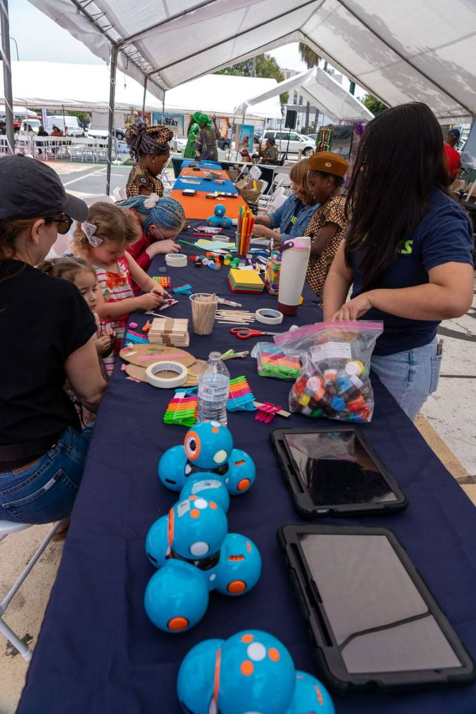
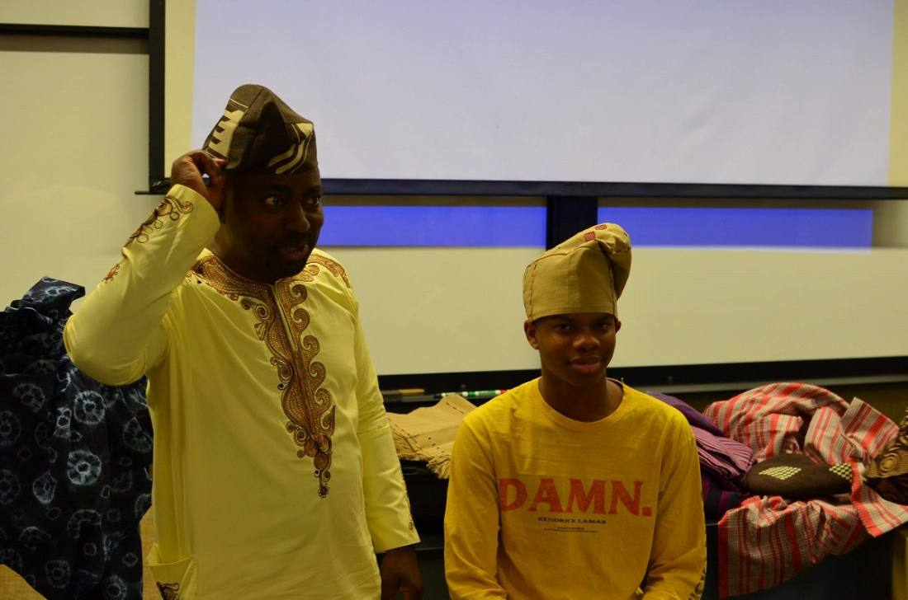

Online, by arrangementAll ages
Yoruba Language Lessons
Speaking, reading, and tone marks, taught one-to-one or in small groups over video call by our teacher. Times are set with her.
Enroll a learnerWhat runs through the year, for children, teenagers, and adults, across Los Angeles. Two programs have their own page. The rest are described in full below.
Speaking, reading, and tone marks, taught one-to-one or in small groups over video call by our teacher. Times are set with her.
Enroll a learner
Members who put culture to work: the Solar Hub, Green Goods, and a monthly circle that keeps ideas moving.
Meet the Collective
Àgbàlá Ọmọde, the children's compound, and the STEM Hub. From ayo boards to robotics.
On this page
Between Los Angeles and Ọ̀yọ́ State. Members travel, host, and come back with something to teach.
On this pageEach card says who it is for and when it runs, so you can find the right one at a glance.
Kids & STEM is two things under one name. Àgbàlá Ọmọde is the children's compound: it runs at the Odunde Festival and through the year, and it is where the youngest members of this community meet each other. The STEM Hub is the technical half, from ayo boards to robotics, built on the belief that a child who knows where they come from carries that into everything else they learn.

The children's compound. Games, art, and ayo, at the festival and through the year.

The technical half of the children's program.

One line per program, across one year. Worth a screenshot.
Three ways to be part of the programs.
Online lessons for children and adults, scheduled with the teacher. Write to her to start.
Classroom helpers, festival hands, and the children's compound. One form, and we place you.
Gifts hold up the language lessons, the children's programs, and the festival.